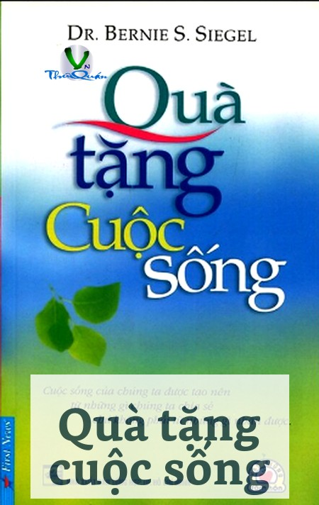

« Back
Quà Tặng Cuộc Sống
By Nhiều Tác Giả

Nếu Được Sống Đến 2 Lần
Tìm Kiếm Tình Yêu
Vì Sao Phụ Nữ Khóc?
Những Dòng Suy Tư Cảm Động...
Đôi Lời Gửi Tới Những Ai Chưa Yêu, Đang Yêu Và Sẽ Yêu
Sự Kỳ Diệu Của Tình Yêu
Bài Học Về Sự Tự Tin
Cà Phê Muối
Hãy Là Chính Mình
Khi Bạn Đếm Từ Số 0
Sức Mạnh Của Nụ Hôn
Con Gái, Mẹ Và Thần Tượng
Họ Đã Nói Tình Yêu Là…
Bạn Là Món Quà Của Cuộc Sống...
Nếu Tôi Biết Rằng…
Một Chuyện Tình
Bạn Thân Và Người Quen...
Nghịch Lý Cuộc Đời
Valentine
Hoa Hồng Tặng Rose
Giá Trị Những Dấu Chấm Câu
5 Việc Của Đời Người
Cuộc Sống Là Những Va Đập
Bạn Cũng Phải Khóc Trước Khi Bạn Lau Khô Nước Mắt
Chúng Ta Cần Một Người Bạn
Hãy Nhìn Lại Cuộc Sống
Khi Người Ta Gửi Đi Một Nụ Cười
Quy Luật Hạt Giống
7 Kỳ Quan Thế Giới
Bài Học Về Cách Chấp Nhận
Bắt Đầu Từ Con Số Không!
Một Lời Cám Ơn!
Nước Mưa
Thưa Thượng Đế
Món Quà Của Cô Tiên
Quà Tặng Của Một Thiên Thần
Truyền Thuyết Hoa Hồng
Cô Gái Ở Cửa Hàng Bán Đĩa CD
Ước Mơ Đẹp
Một Ngôi Sao, Một Định Mệnh
Cháu Là Lính Cứu Hỏa Thực Sự
Em Ốc Biển, Anh Đại Dương
Lời Xin Lỗi Thứ 100
Có Thể
Cái Lạnh
Muối
Ước Vọng Và Hạt Giống
Đôi Cánh Thiên Thần
Lời Khuyên Dành Cho Cuộc Sống
Trong Yêu Thương, Không Có Khái Niệm "Thay Thế"
Lý Do Cho Một Tình Yêu
Màu Sắc Của Tình Bạn
Tình Yêu Và 2 Màu Đen, Trắng
Đi Tìm Hạnh Phúc
Một Vài Điều Về Nghệ Thuật Sống
Cho Và Nhận ...
Tia Nắng, Gió, Mặt Trời, Mặt Trăng
Tấm Thẻ Của Cảm Xúc
20 Đô-La
Cánh Cửa
Quán Cà Phê Chiều Thứ 7!
Chiếc Xe Đạp Bằng Đất Sét
Góc Thiếu Của Mỗi Người
Ngụ Ngôn Của Cây Bút Chì
Đồng Tiền Vàng
Niềm Vui Bé Bỏng!
Người Đổ Rác Xóm Tôi
Đêm Giao Thừa
1 Chút Trong Cuộc Đời
Giá Trị Của Thời Gian
Món Quà Giáng Sinh
Đường Về Nhà
Giọng Nói
Những Quy Luật Cuộc Sống
Khi Tình Yêu Ra Đi
Hai Con Chó
Hạc Giấy
Sự Đấu Tranh
Nghệ Thuật Tha Thứ
Những Trái Tim Nhỏ
Những Lâu Đài Trên Cát
Tờ Giấy Trắng
Cho Và Nhận
Cánh Én Báo Tin Vui
Nụ Hôn Trên Chuyến Tàu
Câu Lạc Bộ Những Hòn Đá
Chú Bé Và Con Sò Nhỏ
Để Cuộc Sống Đơn Giản Hơn
Người Vun Đắp Ước Mơ
Một Ly Sữa
Trên Tuyết
Quan Sát Và Lắng Nghe
Khi Trái Đất Chuyển Động Vì Bạn!
Cách Nhìn Mới Về Cuộc Sống
Tình Yêu Cuộc Sống